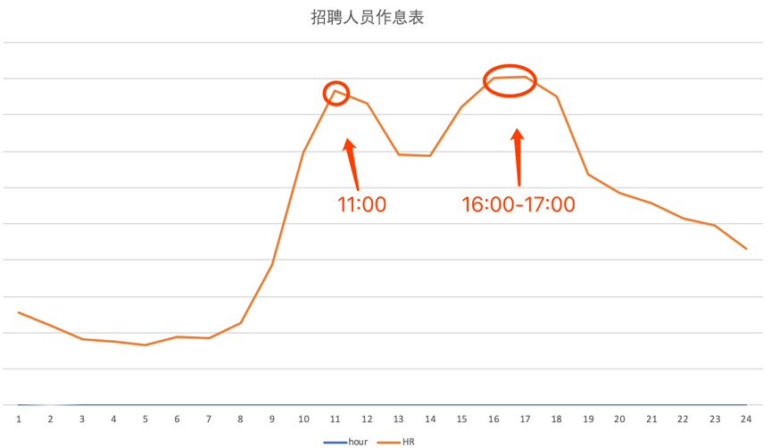
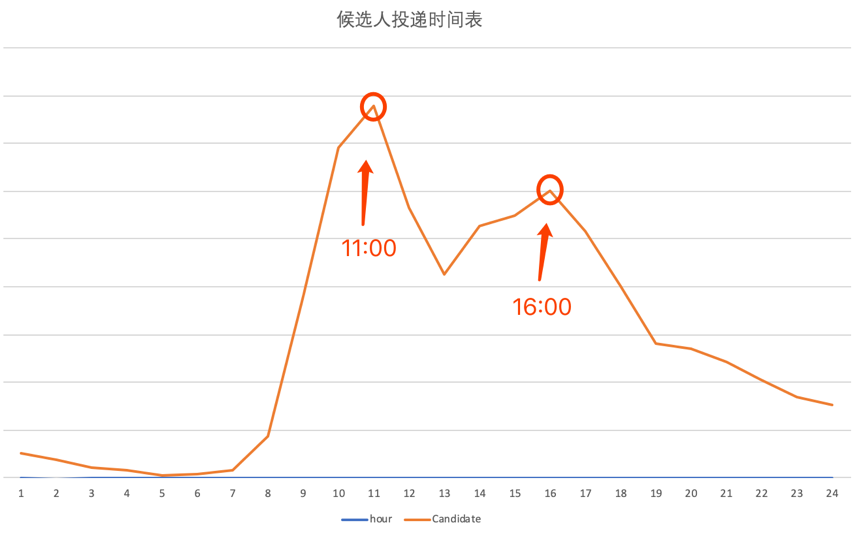

- 00 开篇词：了解面试“潜规则”，从海选中脱颖而出.md.html
- 01 设计一份吸引面试官的简历.md.html
- 02 读懂职位 JD，精准投递简历.md.html
- 03 把握投递简历的黄金时间段.md.html
- 04 做好充分的准备去面试.md.html
- 05 把握面试时的关键点.md.html
- 06 捕捉 HR 微表情，做出应对策略.md.html
- 07 巧妙推销自己的 3 个技巧.md.html
- 08 认清自身实力，明确求职方向.md.html
- 09 判断公司背景，做出合理选择.md.html
- 10 了解行业薪资，清晰找准定位.md.html
- 11 目标明确，阐明沟通.md.html
- 12 工作交接流程福利衔接.md.html
03 把握投递简历的黄金时间段
你好，我是你的面试课老师杨宇堃，欢迎进入第 03 课时的内容“把握投递简历的黄金时间段”。
大家从事不同种类的工作，每天也在不断地制定自己的工作时间表。每个月总结的时候会发现有些事情总是在一个固定的时间去做，也可能在这个时间段发起同一件事情的几率非常的大，而且不止自己这样做，做同样工作的小伙伴亦如此。这就是工作种类作息时间的安排，招聘人员也一样，他们也有固定看简历和电话沟通的时间段。如果抓住这个“黄金投递点”，就等于抓住了招聘人员的视线，进而获得更多关注的可能性会更大。
HR 工作作息时间表
每个公司特别是互联网公司都有大量的招聘需求，而面对这么多的需求，公司 HR 是如何应对的？每天的工作作息时间是否有规律可循呢？
做为资深 HR 的我虽然每天都会合理安排工作时间和计划，但我自己的数据太单薄了，所以拜托拉勾网的研发小伙伴帮我调取了相关数据，其结果和我日常的工作安排非常的相似。由此可知，公司 HR 的工作节奏也都是差不多的。
下面通过曲线图的形式来展示拉勾网 HR 的工作作息表：

由上图可知，每天 HR 最活跃的时间段为上午 11 ~ 12 点、下午 4 点 ~ 5 点。也就是说在这两个时间段里，我们的招聘小伙伴在疯狂的筛选简历，即在招聘平台上筛选来自不同候选人的简历。
如果面试者投递简历的时间为上午的 10 ~ 11 点 或者下午的 3 ~ 4 点，那么简历有可能会被优先处理。相信你也有过体验：一天当中，上午的工作心情以及认真度普遍是最高的，也就是说投递的简历是最容易被招聘人员筛选出来的。
候选人投递时间表
上面分析了 HR 最活跃的时间段，那求职者是不是也有个投递简历的高峰期？如何错开高峰期呢？我也请研发小伙伴调取了拉勾网投递简历的数据。
下面通过曲线图的形式来展示候选人投递简历的时间表：

由上图可知，候选人投递简历的高峰期是在上午 11 点和下午 4 点这两个时间段，也就是说和 HR 筛选简历的时间段完全重合。相信你也有过类似的体验：当专心做某一件事情的时候，肯定不会注意到投递来的新简历，这就是为什么简历石沉大海的原因。
通过上面两个数据的分析，相信你也应该知道了 HR 筛选简历的时间段，由此可知，投递简历的“黄金时间段”在上午的 10 ~ 11 点 或者下午的 3 ~ 4 点。因此，从现在起，调整投递简历的时间吧，在更好的时间段将自己的简历呈现到 HR 的面前。